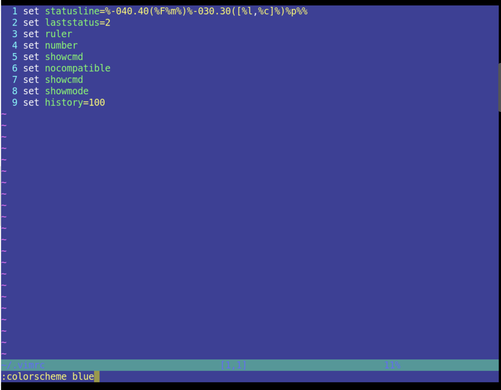
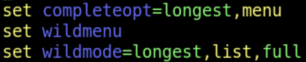
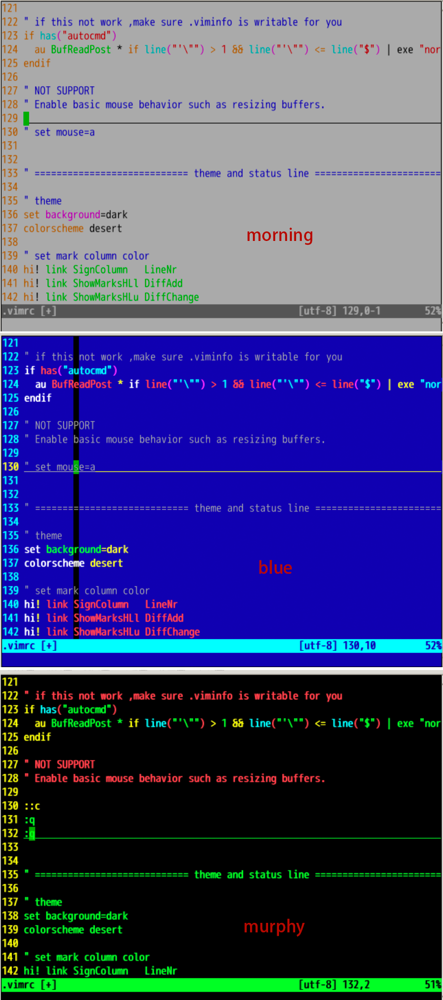
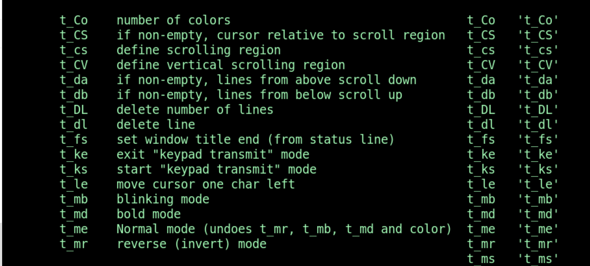
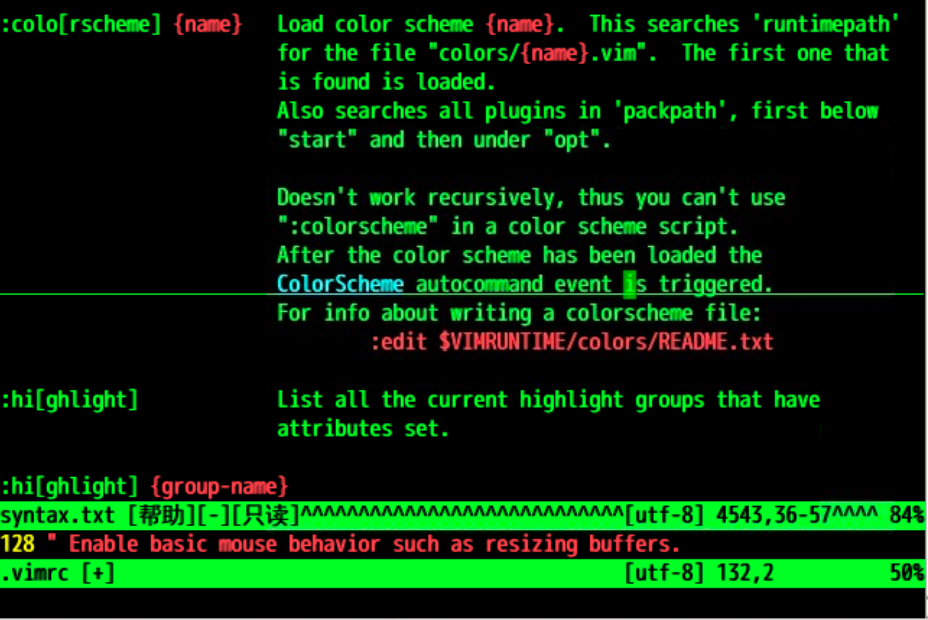
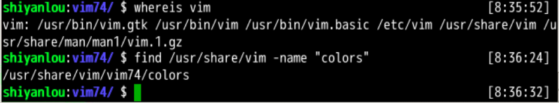
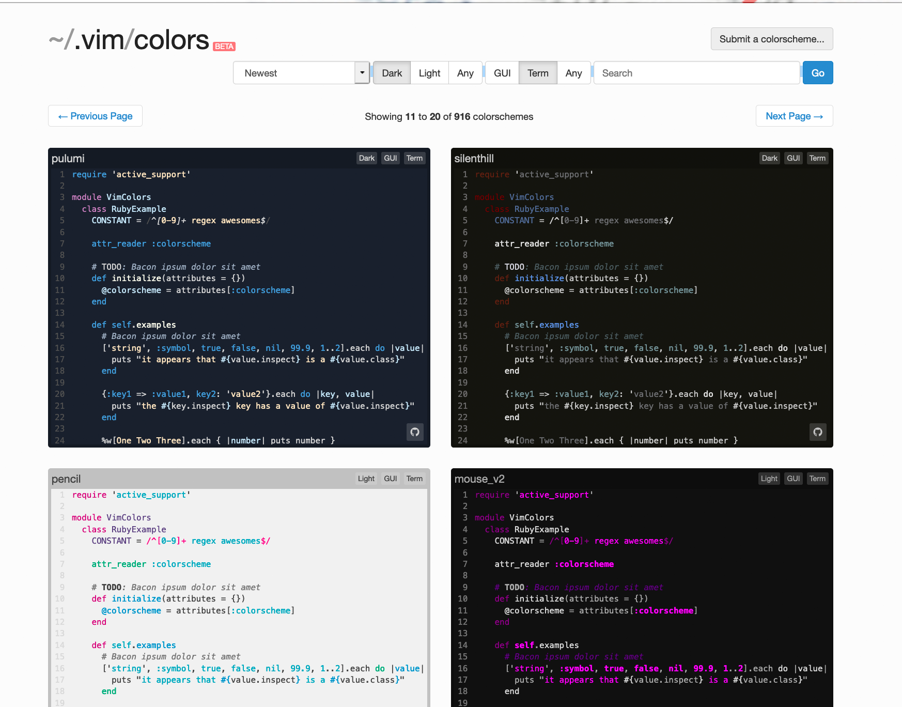
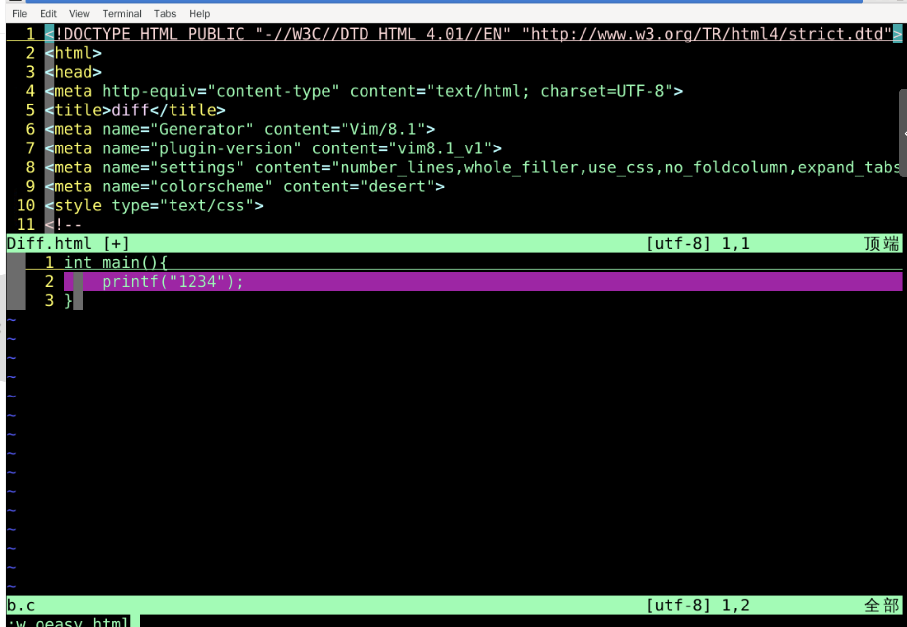
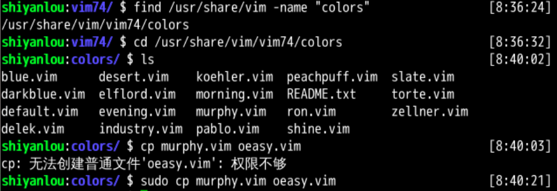

~/.vimrcvi ~/.vimrc.old 中发现 colorscheme 属性
blue 试试:colorscheme bluecolorscheme 的提示是怎么来的？:set wildmode? 看一下longest,list,full:set wildmod=:set wildmode=longest,list,full
还可以调出菜单 :set wildmenu
:set nowildmenu 就没有菜单了:colorscheme tab 就没有用了wildchar
:colorscheme tab
murphy 或 blue 还行:set t_Co? 查看当前色彩模式:set t_Co=256 色彩模式设置为 256 色:set t_Co& 色彩模式设置为默认:h 't_Co' 查询帮助
t 是 terminal终端Co 是 Color颜色~/.vimrcset t_Co=256colorscheme blueset statusline=%-040.40(%F%m%)%-030.30([%l,%c]%)%p%%set laststatus=2set ruler set number set showcmdset nocompatible set showcmdset showmode set history=100 set t_Co=256colorscheme blue:h colorscheme 可以找到配色方案的帮助
#找到vim的位置
whereis vim
#找到colors的位置
find /usr/share/vim -name "colors"


github 去下载相应的配色文件.vim 文件放进 colors 文件夹就可以了:colorscheme XXX 应用该配色方案#下载颜色方案
git clone https://github.com/gryf/wombat256grf.git
#放到相应文件夹里
sudo cp ./wombat256grf/colors/wombat256grf.vim /usr/share/vim/vim81/colors
#运行
vi oeasy.java
:colorscheme wombat256grf:TOhtml:w oeasy.html
:source $VIMRUNTIME/syntax/2html.vim
#找到colors的位置
cd /usr/share/vim/vim81/colors
#列出所有配色方案
ls
#复制出自己的配色方案
sudo cp murphy.vim oeasy.vim
colors 的位置:colorscheme oeasy